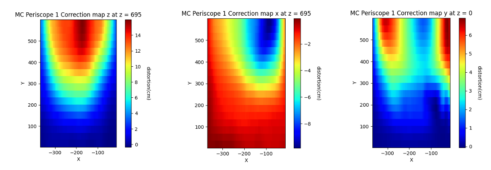

Undergraduate Research Projects
NSF REU at the University of Minnesota
Population-Based Simulations of Gravitational Wave Signals for future LIGO Observing Runs
Gravitational wave (GW) signals detected by LIGO are sometimes accompanied by optical counterpart signals known as kilonovae emitted from the same binary merger event. These kilonovae are the primary source of heavy element production in the universe, yet they are only bright enough to observe for a short time. It is therefore important to optimize valuable telescope time when searching for these counterpart signals by assessing their ability to detect and localize events. During my REU, I generated “observing scenarios” to simulate the detection and localization of GW signals. Using an advanced population model, I created approximately 10,000 monte carlo simulated GW signals and modeled the brightness of their optical counterpart signals over time with the multidimensional monte carlo radiative transfer code POSSIS. I then used LIGO’s dedicated data grid for analyzing large volumes of GW data to provide realistic constraints for detection rates, localization areas, and effectiveness of different instruments in tracking GW events. We found that more kilonovae resulting from binary neutron star and neutron star black hole mergers were expected to be found in the third LIGO observing run, which began in 2023, compared to the first two runs. These results were published in the Astrophysical journal: DOI 10.3847/1538-4357/acfcb1
Senior Honors Thesis – Mathematics
Spatiotemporal Chaos in the Damped-Driven Sine Gordon Equation
For my undergraduate thesis in mathematics, I studied the dynamics of the Sine Gordon Equation, a well known nonlinear hyperbolic partial differential equation that models a classical wave coupled with simple pendulum motion. The aperiodic late time behavior of stationary solutions to the damped driven sine gordon equation were of particular interest to me. When damping and forcing are present, solutions exhibit aperiodic late time behavior that is sensitive to initial conditions, which are signatures of spatiotemporal chaos. To visualize regimes in phase space where the system exhibits chaotic behavior, I numerically computed millions of Lyapunov exponents, which quantify the separation rate of perturbed solutions as exponential functions.
Senior Honors Thesis – Physics
Investigating the Unruh State for a Massless Scalar Field in 4D Schwarzschild-de Sitter Space
For my undergraduate physics thesis, I studied quantum effects related to the Hawking effect in 4D Schwarzschild-de Sitter space. I looked at the late time behavior of mode functions that are solutions to the Klein-Gordon equation for a massless scalar quantum field beyond the cosmological horizon in the cosmological region. In particular, I looked at modes in the Boulware and Unruh states. I found that for a black hole with event horizon of radius 1/10, the contribution to the Hawking effect from modes on the cosmological horizon dominates over modes originating from the black hole event horizon.
Summer Undergraduate Laboratory Internship at Los Alamos National Lab
Space charge distortion mapping in the ProtoDUNE Detector
During the summer of 2023, I participated in a SULI internship funded by the U.S. Department of Energy at Los Alamos National Laboratory mentored by Sowjanya Gollapinni. I worked on a project for the Deep Underground Neutrino Experiment (DUNE), an upcoming large scale physics experiment for the detection of neutrinos. I developed correction maps for the distortion of the electric field within a prototype of the DUNE experiment from Monte Carlo simulation data of space charge distortions.
